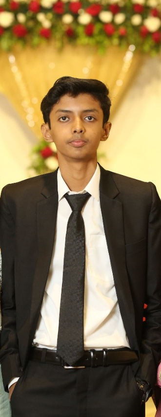

About Me

Hi! I'm Sarim Ayubi, a Computer Science student who loves technology, writing emotional stories, and working on creative projects. I'm always learning and exploring new ideas to grow every day.